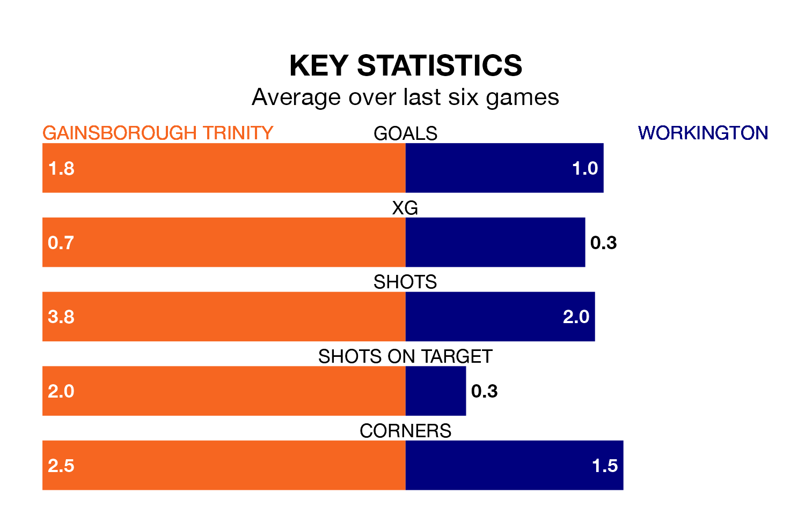

Gainsborough Trinity are on a fantastic run ahead of hosting Workington at the Northolme on Saturday, with 15 points collected from their last six games.
The Blues have picked up five wins and one loss in their last six Northern Premier League games, and face a Workington side whose last six games have brought two wins and one draw.
With 44 goals in 33 games so far this season, Gainsborough Trinity are scoring at below the league average rate with 1.3 goals per game. And they are conceding at an average rate, letting in 54 goals at a rate of 1.6 per game.
Workington, meanwhile, are above average scorers, with 1.8 goals per game, compared to a league average of 1.6. They have conceded 2.0 goals per game.
The away team are 15th in the table after 34 games, of which they have won 10 and drawn 11, earning 41 points.
The Blues are one place ahead of Workington in 14th, with 13 wins and five draws putting them on 44 points.
Gainsborough Trinity's last match was on March 16, a 2-0 loss against Ashton United.
Workington lost 1-0 against Hyde United last time out, on March 9.
Updated: 10:19 (UTC), 22/03/24